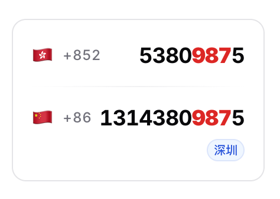
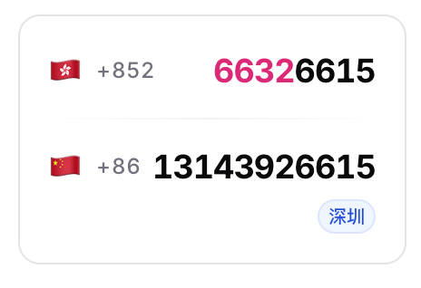

奶昔🥤
@realNyarime
@HiFrey @luoleiorg 如果把1314380改成1314520就更好了，再加上后缀和香港号码一致，就跟靓号差不多了


Frey轰轰
@HiFrey
需要办CUniq月神卡的朋友可以去 @luoleiorg 磊哥开发的选号网站上去先选号，看看有没有自己喜欢的号码 https://t.co/BALlsXET1P 选到喜欢的号码了以后再去官网办，比如我截图的这两个号码办里最低套餐就可以选择，都很不错。 https://t.co/VjGRhuQc1N https://t.co/1B9FtI3I7E